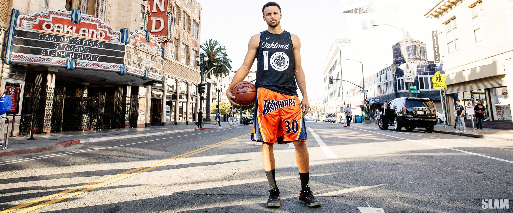
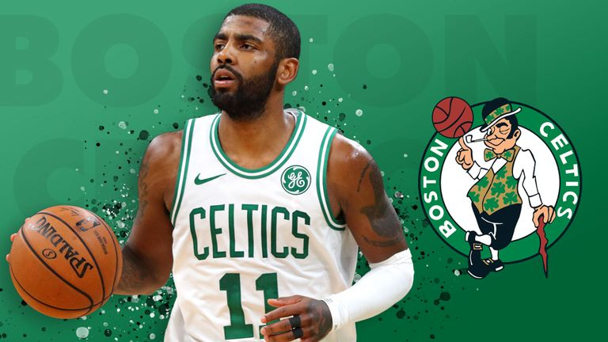
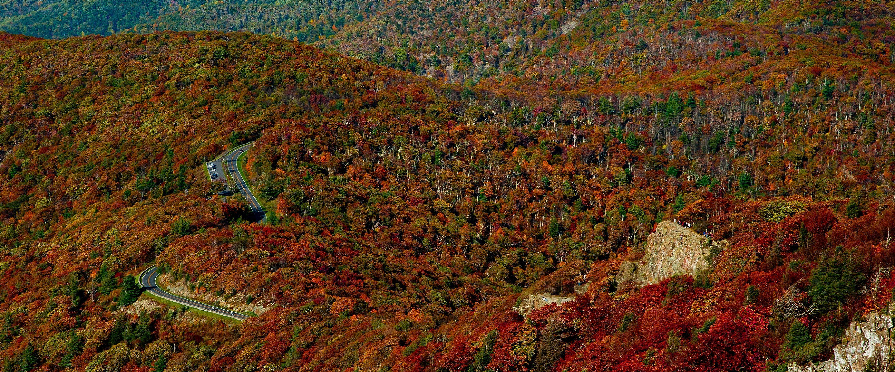

29 Kasim 2001 tarihinde Azerbaycan'in Baku sehrinde dogdum.Egitimimi Baku Ataturk Lisesi'nde tamamladim.YOS sinaviyla Sakaryanin bilgisayar muhendisligi bolumunu kazandim.Suanda Sakarya Universitesi Bilgisayar Muhendisligi bolumu 1.sinif ogrencisiyim.
Baskbol'da NBA maclarini severek takip ediyorum.Boston Celtics taraftariyim
KENDIM HAKKINDA
29 Kasim 2001 tarihinde Azerbaycan'in Baku sehrinde dogdum.Egitimimi Baku Ataturk Lisesi'nde tamamladim.YOS sinaviyla Sakaryanin bilgisayar muhendisligi bolumunu kazandim.Suanda Sakarya Universitesi Bilgisayar Muhendisligi bolumu 1.sinif ogrencisiyim.

Futbol ve basktebol oyanamayi ve maclarini seyretmeyi(Ozellikle NBA ligini takip etmeyi),muzik dinlemeyi ve seyahet etmeyi severim.
Baskbol'da NBA maclarini severek takip ediyorum.Boston Celtics taraftariyim
NBA hakkinda bilgi almak icin tiklayin

Hobilerim-->FUTBOL
Hobilerim arasinda futbol oynamak ve izlemek var.Cok iyi oynayamasamda ozellikle maclari takip etmeyi seviyorum.Ingiltere ligi favorimdir.Takim olarak Galatasaray'i destekliyorum.
Galatasaray hakkinda bilgi almak icin tiklayin


Seyahet etmeyi,biyerleri gezmeyi severim.Sartlarin uygun oldugu durumlarda seyahet etmek ilk tercihim olmustur.Farkli sehirleri,kulturleri kesfetmek bana herzaman ilgi cekici gelmistir